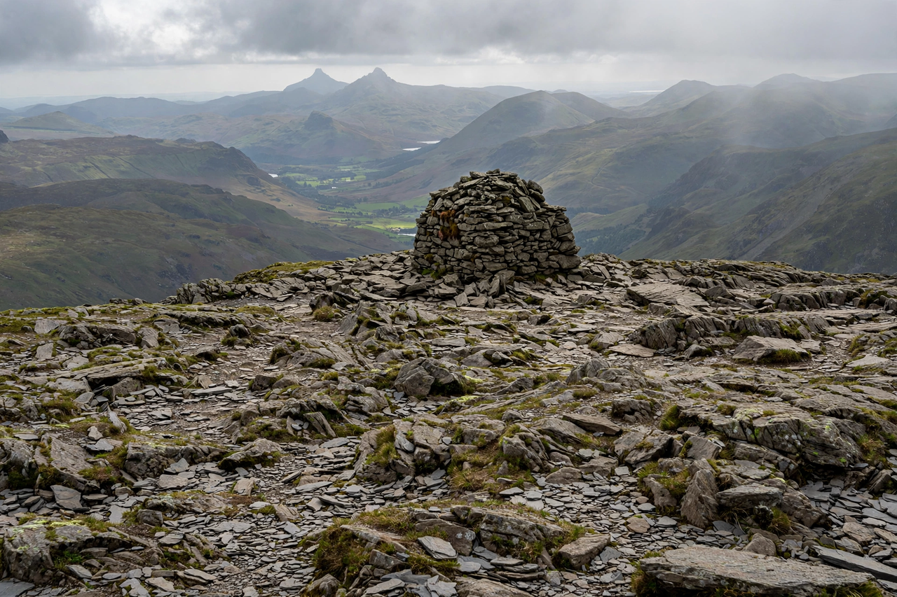

Highest mountain in England, in the Lake District, Cumbria
| Scafell Pike | |
|---|---|
 Summit cairn of Scafell Pike, England's highest ground | |
| Elevation | 978 m (3,209 ft) |
| Location | Lake District, Cumbria, England |
| Parent range | Southern Fells |
| Protected by | National Trust (war memorial) |
Scafell Pike is the highest mountain in England, at 978 metres (3,209 ft) above sea level. It stands in the Lake District National Park in Cumbria, in the Southern Fells above the valleys of Wasdale, Eskdale, and Borrowdale. Its rocky summit plateau commands views that, in exceptional conditions, take in mountains in Scotland, Wales, Ireland, and the Isle of Man.
The massif includes the neighbouring summits of Broad Crag and Ill Crag and is separated from Scafell (the second-highest English peak) by the col of Mickledore. The summit is a boulder-strewn plateau crowned by a large cairn and a memorial plaque. Alfred Wainwright included Scafell Pike in his celebrated Pictorial Guides to the Lakeland Fells.
In 1919 Lord Leconfield donated the summit to the National Trust in memory of the men of the Lake District who fell in the First World War, calling it "the highest memorial in the land"; a plaque records that the summit is "in perpetual memory" of those men, to be kept "inviolate" for the nation.
The most popular ascent is from Wasdale Head via Brown Tongue and Hollow Stones; other routes start from Seathwaite in Borrowdale, Great Langdale, and Eskdale. Scafell Pike is the English summit in the National Three Peaks Challenge, in which participants climb the highest mountains of England, Scotland (Ben Nevis), and Wales (Snowdon) within 24 hours.